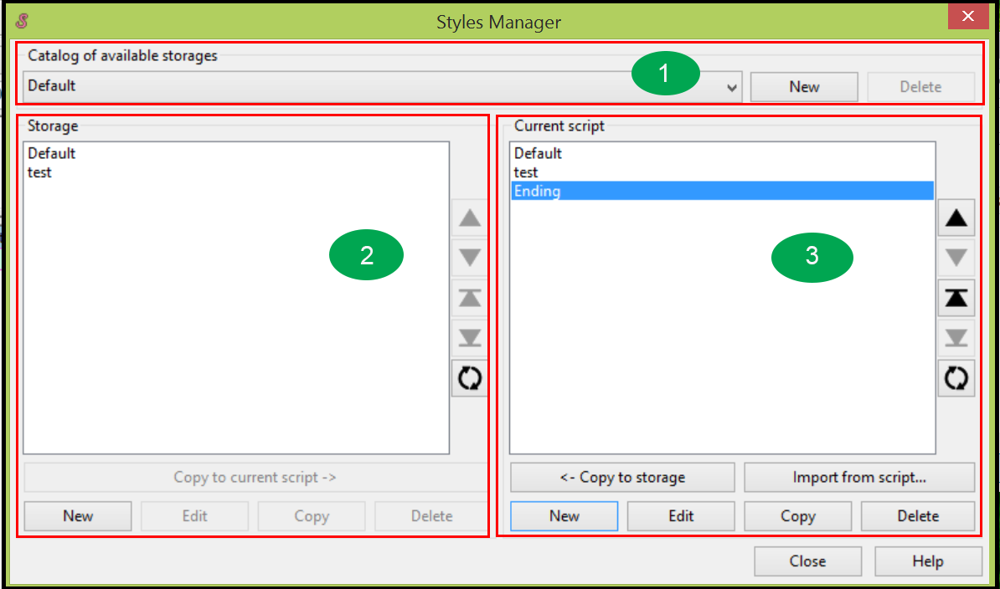

The Styles Manager
In Aegisub, you use Styles Manager to organize, save, edit, and delete styles. The Styles Manager organizes all stored styles into groups. Each group is called a storage.
To open the Styles Manager, you go to main menu and click Subtitles | Style Manager.... The Styles Manager displays.

The Styles Manager has three main areas:
Catalog of available storages: You can select a storage from available storages by clicking the down-arrow. You can also create a new storage or delete an exiting storage by clicking New or Delete button.
Storage: All styles in the selected storage display under Storage. You can create a new style to add to the storage, edit an existing style in the storage, or delete an existing style from the storage. You can copy an existing style from storage to Current script area.
 Current script: This area keeps your current styles. Only styles in the Current script area display in the drop-down style list when you edit subtitles; therefore, you have to move at least one style from storage to the Current script area before you can use it to edit subtitles.
Current script: This area keeps your current styles. Only styles in the Current script area display in the drop-down style list when you edit subtitles; therefore, you have to move at least one style from storage to the Current script area before you can use it to edit subtitles.
Click New to create a new style.
Click Edit to edit an existing style.
Click Delete to delete an existing style from the Current script area.
You can copy your newly created style or edited style to the storage by clicking <- Copy to Storage button. You can also import a style from an existing scripts file.
There are five buttons on the left side of storage (and Current script area). The first four buttons allow you to move one style up, down, to the top, and to the bottom. The lowest button allows you to sort styles by name alphabetically.
When you finish your operations in the Styles Manager, click Close button to close the Styles Manager.